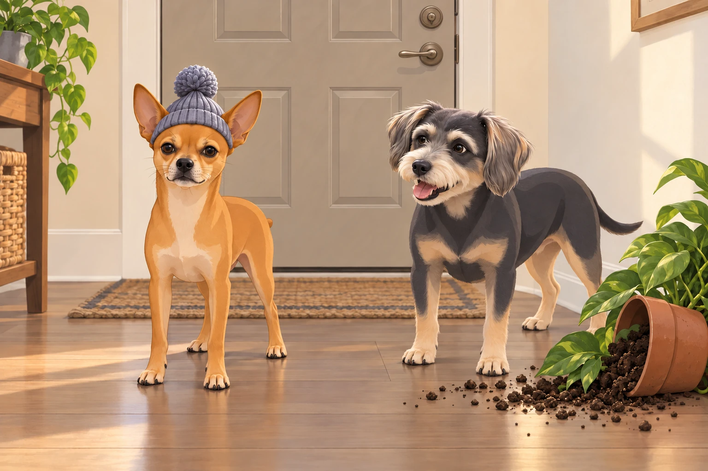
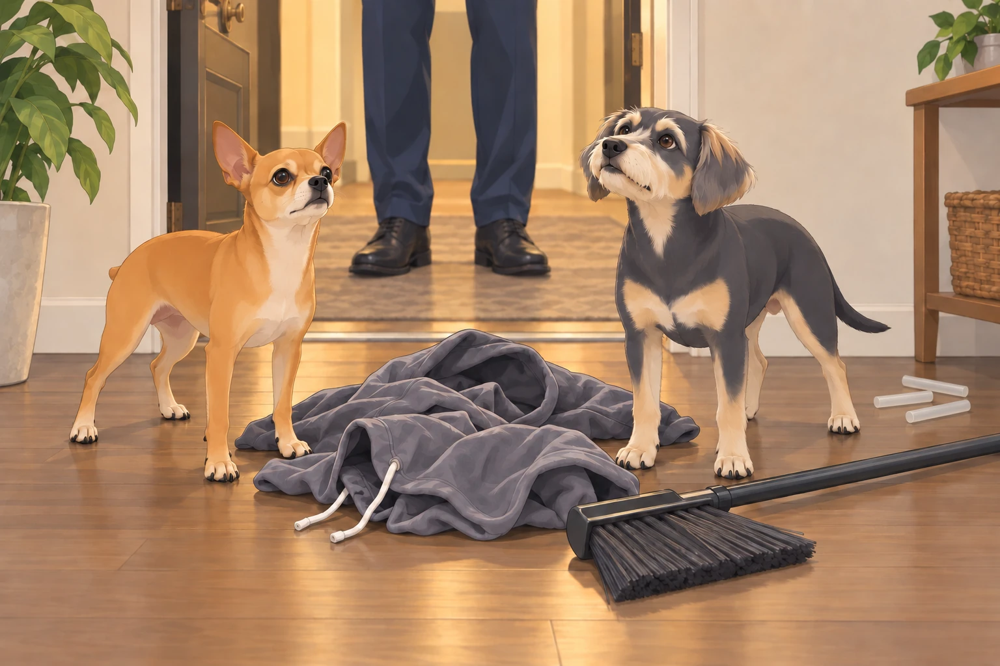
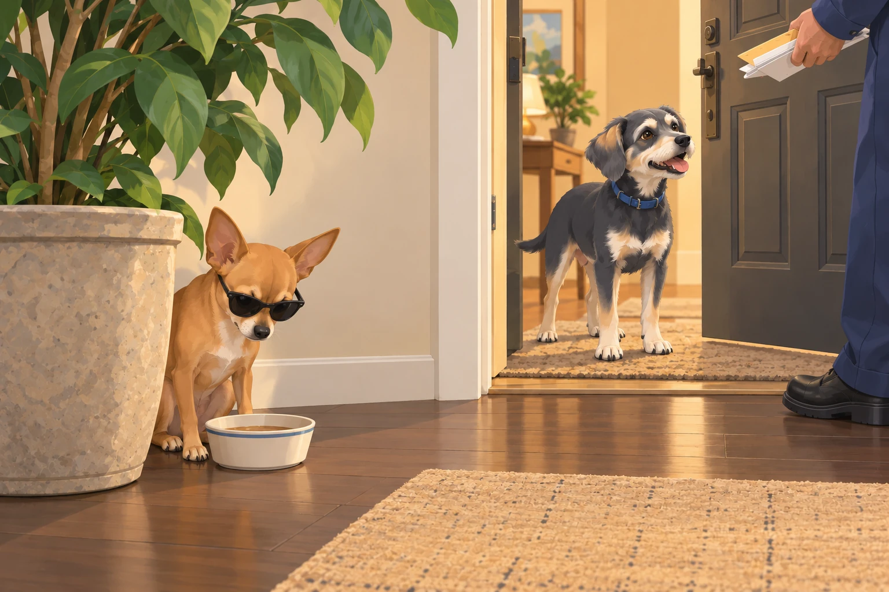
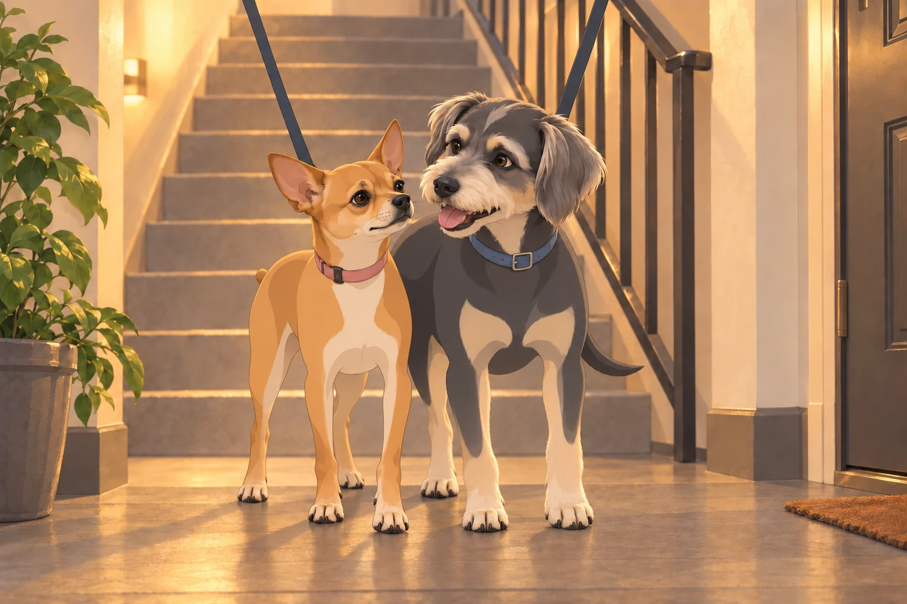

The Weekend Routine: Patrol, Bark, Bathe, Repeat
It was another classic weekend morning. Neet, the cunning commander with ears like satellite dishes, paced in front of the door. Buddy, his best friend, a golden goofball with the heart of a lion, was circling his leash. He wanted the park before Neet found another reason to inspect the door.
“Perimeter check,” Neet announced solemnly. “We move at dawn.”
“It’s 9:42,” Buddy barked, already halfway tangled in his leash.
Neet inspected the bottom of the door again. Buddy stopped circling. The leash kept one final, regrettable appointment with his ankle.
They exited with their human, Neet checking each doorway while Buddy pulled toward the park. This wasn’t just any park. It was Green Zone Alpha in Neet’s operational logs. For Buddy, it was “The Happy Pee Grass Place.”
The walk began like it always did:
Bark at the squirrels.
Bark at the birds.
Bark at the wind.
Bark at an inflatable duck on someone’s balcony (Neet insists it’s spying for the manager).
As they approached the far fence of the park, Buddy spotted a labradoodle in a bow tie.
“INTRUDER!” he screamed and bolted.
Neet followed, because dignity be damned, if Buddy’s charging into chaos, he wasn’t missing out.
The Bath and Betrayal
After their patrol came the dark hour: The Shower Ritual.
Neet hated it. Not because of the water— but because it was undignified. He’d spent all morning asserting dominance over lampposts and now he smelled like oatmeal shampoo?
Buddy, on the other hand, believed every bath was a test of faith. He’d whimper, yodel, and attempt to fake his own death. The water barely touched his back and he collapsed like a Victorian maiden struck by scandal.
Nail trims? Neet growled in Morse code. Buddy sat on the clippers. Their human held out a hand. Buddy looked helpfully around the bathroom for the missing object.
But the real betrayal came when they were wrapped in towels like canine burritos and told “You look so cute!”
“We are warriors,” Neet muttered. “Not cuddle muffins.”
Enter: The Manager
That evening, clean and still offended, they followed their human into the lobby. Neet was recovering his usual stride when he saw the manager.
The Manager.
A man so square he could be legally classified as a geometry lesson. Name tag: Grubbs. Attitude: “If it wiggles and wags, it violates policy.”
He froze, mid-conversation with Mrs. Glenda (unit 5B, smells like hard candy). His eyes narrowed. Then they widened.
“There’s two of them,” he said. “This building only allows one dog per apartment.”
The words hit like a thunderclap. Buddy gasped audibly. Neet stopped mid-pee.
“Our lease said nothing of this,” Neet growled (silently, because barking would be counterproductive).
“You’ll be getting a notice,” Grubbs said, and vanished into the stairwell like a low-budget villain.
Operation: Shadow Dog
The next morning, everything changed.
Neet went dark.
He refused to be seen in the hallways during business hours. If Buddy went for a walk, Neet waited— five minutes later, he’d sneak out using Staircase Route Bravo, ducking past the vending machine like he was on a stealth mission in “Call of Doody: Park Ops.”
He even wore a hat once. It was a baby-sized beanie, and it didn’t help. But it made Buddy laugh so hard he knocked over a houseplant.
Neet looked at the pot, the spilled soil, and Buddy.
“You’ve compromised my position.”
“Your position has a pom-pom.”

Neet’s entire behavior shifted. No more barking in the hallway. No more window surveillance. He even refused to chase the neighbor’s cat, Mr. Pickles, on Mondays.
“Too risky,” he whispered. “Pickles has ties to management.”
Buddy’s Alternate Plan
Buddy, meanwhile, had other ideas.
“If we’re gonna be just one dog,” he reasoned, “we have to become one dog.”
So, he constructed a costume using an old hoodie, a broom, and three hot glue sticks. The plan? Neet rides on his back while Buddy walks on two legs. “We’ll be a tall spaniel mix named Todd.”
“Why Todd?”
“Grubbs will be counting dogs. He won’t be expecting Todd.”
Neet considered this long enough for it to become the plan.
They got as far as the front door before Neet fell off and Buddy panicked, screaming “ABORT TODD! ABORT!”
The manager, returning from a suspiciously timed mailbox check, spotted them mid-crash.
The hoodie settled between two very separate dogs.

“I’m watching you,” he said.
They both peed.
Todd had lasted four seconds and required two cleanups.
Neet’s Descent into Paranoia
Over the next week, Neet devolved into full espionage mode.
He began carrying small items in his mouth— a rolled-up napkin (“classified documents”), a sock (“disguise kit”), and once, Buddy’s chew bone (“insurance”).
Buddy followed the insurance from room to room. At least now he always knew where the secret agent was.
If someone knocked at the door, Neet flattened under the couch like a pancake. If he heard the elevator ding, he would roll silently into the laundry basket. One time, he chewed a hole into a grocery bag and sat inside it for twenty minutes, just in case Grubbs walked by.
The Grand Counter-Offensive
Eventually, their human had enough.
He submitted a firm letter to the board, complete with photos, Neet’s medical documents and a diagram showing how both dogs together weighed less than Mr. Jenkins’ single bulldog, Larry. Buddy sat beside the desk while he worked. Neet watched the hall. When the printer woke up, Neet abandoned the hall. Buddy stayed; the appeal needed at least one dog in attendance.
But while the paperwork made its way through bureaucracy, Neet remained underground. Buddy became the face of the operation— greeting neighbors, wagging extra hard, even licking the mailman.
Neet monitored it all from behind a ficus, wearing sunglasses and sipping beef broth like it was whiskey.

To Be Continued…
No eviction notice had come. Yet.
Grubbs still lurks.
Neet still hides.
Buddy still believes they can merge into a “MegaDog” through synchronized tail wagging.
And every evening, at 7:05pm sharp, the stairwell echoes with the sound of paws. Silent, stealthy, ridiculous.
At the bottom, Buddy waits for Neet.
“Same time tomorrow, Todd?” he whispers.

Neet bumps his shoulder and leads the way. Two dogs go to the park together, however many the building prefers to count.